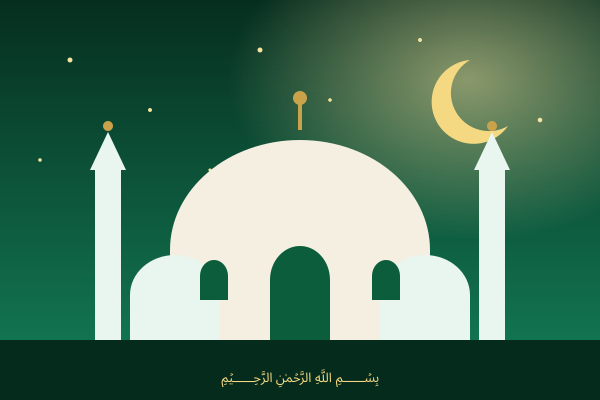

قرآن کی روشنی، دل کے سکون کے لیے
اپنی کیفیت کے مطابق جار میں سے قرآن کی آیت نکالیں، اور ڈاکٹر اسرار احمد، مولانا مودودی اور یوتھ اکیڈمی کے بیانات تک پہنچیں۔
جار کھولیں بیانات دیکھیں
آج کی آیت
🔔 روزانہ یاد دہانی
وقت چنیں، سائٹ کھلی ہو تو اسی وقت آج کی آیت کا نوٹیفکیشن آئے گا۔
بیانات
نیچے دیے گئے لنکس اصل اور سرکاری ذرائع (یوٹیوب) کی طرف لے جاتے ہیں۔
ڈاکٹر اسرار احمد رحمہ اللہ
قرآن فہمی، خلافت اور دعوتِ رجوع الی القرآن پر مشہور دروس و خطابات۔
بیانات سنیںیوتھ اکیڈمی
نوجوانوں کے لیے ایمان، کردار اور زندگی کے مسائل پر رہنمائی۔
بیانات سنیںمولانا سید ابوالاعلیٰ مودودی
تفہیم القرآن کے مصنف؛ ان کی تقاریر اور اسلامی افکار۔
بیانات سنیںہمارے بارے میں
نورِ ہدایت ایک مفت اسلامی ویب سائٹ ہے جس کا مقصد قرآن کی آیات کو آسان انداز میں لوگوں تک پہنچانا ہے تاکہ ہر کیفیت میں دل کو سکون ملے۔ آیات کے ترجمے مختصر مفہوم کے طور پر دیے گئے ہیں؛ تفصیل کے لیے مستند تراجم و تفاسیر سے رجوع کریں۔
بیانات ہماری ملکیت نہیں؛ ہم صرف اصل ذرائع کی طرف رہنمائی کرتے ہیں۔
اکثر پوچھے گئے سوالات
جار بکس کیا ہے؟
جار میں قرآن کی آیات کی پرچیاں ہیں۔ کیفیت چن کر ایک آیت نکالیں۔
کیا بیانات اسی سائٹ پر ہیں؟
نہیں، ہم اصل چینلز کے لنکس دیتے ہیں تاکہ آپ سرکاری ذرائع سے سنیں۔
کیا یہ سائٹ مفت ہے؟
جی ہاں، مکمل مفت۔